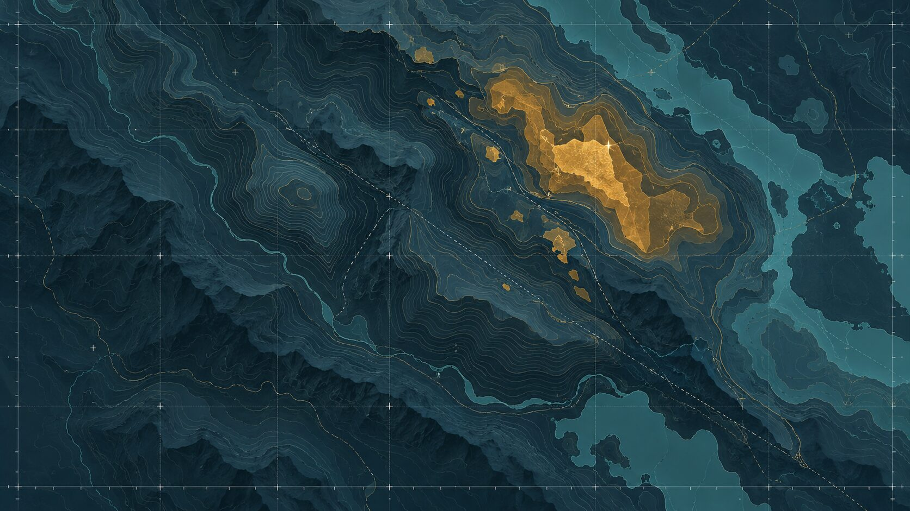
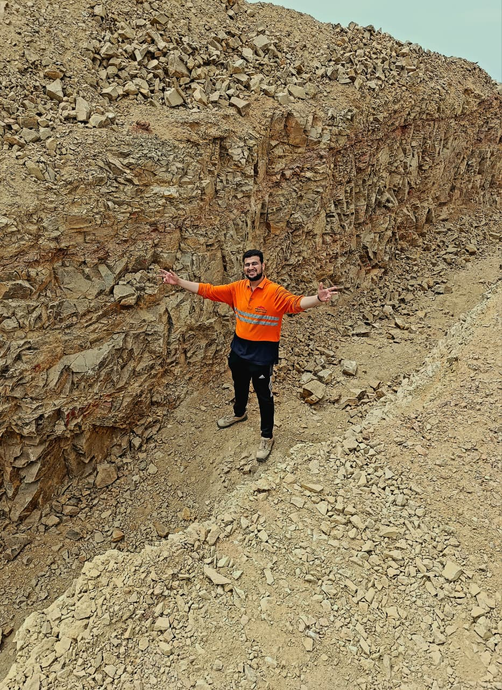
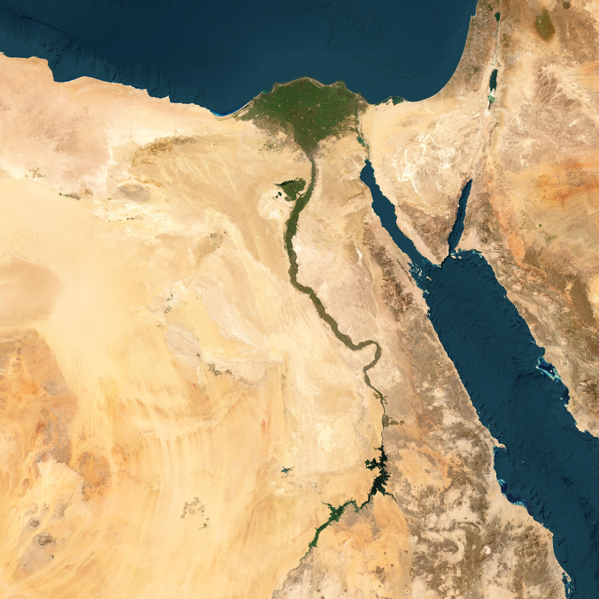
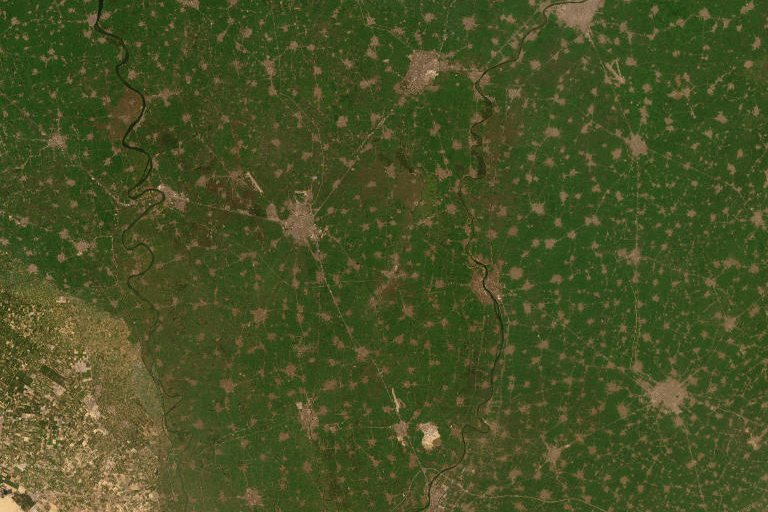
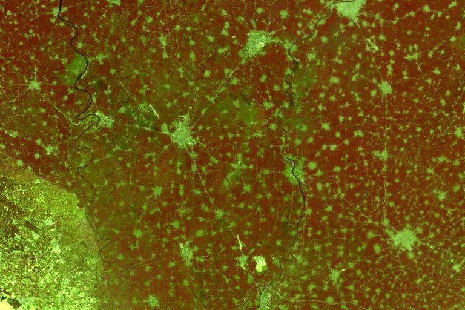
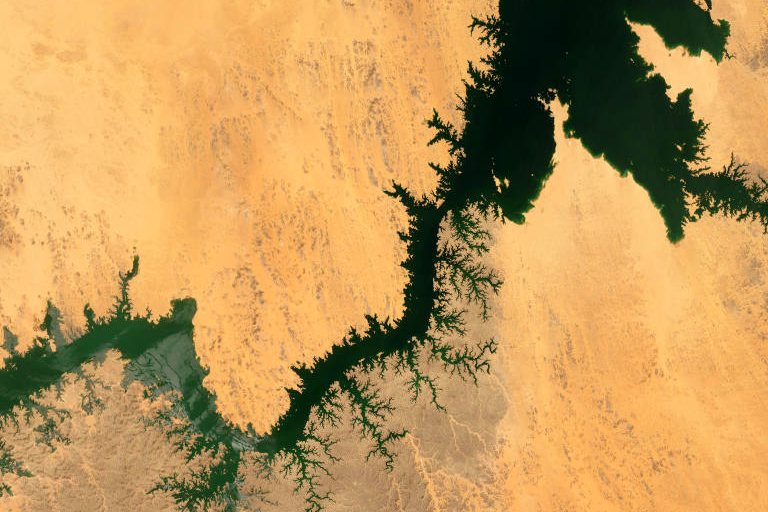
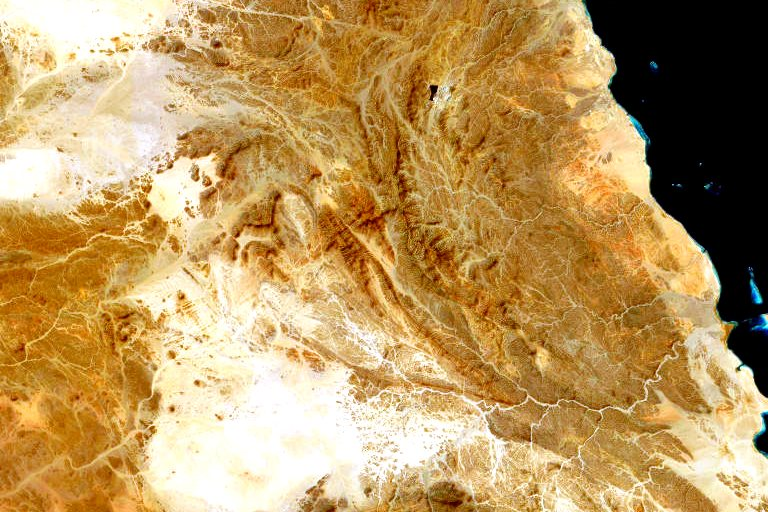

Wael Fathy Gaber
3+ years turning drillhole data, satellite imagery and 3D geological models into decisions for exploration and mining projects.

About
I am a GIS Specialist at Nubian Mining Company in Egypt, working across 3D geological modeling, mineral exploration, remote sensing and geospatial data management.
My day-to-day is building Leapfrog models, validating drillhole data, interpreting satellite imagery and writing Python and ArcPy tools that turn complex geological and spatial data into clear, actionable insight for exploration and mining teams.
- Based in
- Cairo, Egypt
- Currently
- GIS Specialist, Nubian Mining Company
- Focus
- Mining GIS, 3D modeling, remote sensing
Experience
- Build 3D geological models in Leapfrog Geo and Leapfrog Edge, representing lithology, alteration and structural domains to support interpretation of mineralized zones.
- Support mineral resource estimation through block model construction, grade interpolation and domain validation for JORC-aligned resource reporting.
- Interpret WorldView-3 and Sentinel-2 imagery to differentiate rock units and identify alteration zones.
- Integrate exploration datasets from LiDAR, satellite imagery and geological surveys, and prepare geological and topographic maps, trench profiles, cross-sections and 3D visualizations.
- Review drillhole logs, assay data and collar coordinates with QA/QC checks; run structural analysis and stereonets, and use Strater for borehole-log visualization.
- Support field teams with printed and digital maps, QField data preparation, GPS integration and Field-Move post-processing, and automate exports and reporting with Python and ArcPy.
- Managed loading and integration of delivery geodatabases, keeping data updates and synchronization smooth across projects.
- Converted and standardized electrical network data from CAD to GIS platforms, with edge matching and geometric network connectivity.
- Implemented validation rules and advanced data quality control using Data Reviewer and Attribute Rules, and automated validation workflows with Python and ArcPy.
- Entered and digitized spatial datasets including parcels, utilities and land-use layers, with topology checks and spatial data validation.
- Prepared metadata and converted CAD files, scanned maps and PDFs into GIS-ready formats.
Projects
Two web GIS builds, live on GitHub Pages. Find them on the map, then open the apps.

Smart City Model for New Sohag
- Role
- Team leader, graduation project
- Output
- Geodatabase, 2D and 3D web apps
- Methods
- Remote sensing, suitability modeling
A proposed model to transform New Sohag into a smart, sustainable city. I led the team building a comprehensive geodatabase covering infrastructure, public services, transportation networks and land use, applied remote sensing to extract urban-growth indicators and classify satellite imagery, and directed the 2D and 3D visualizations and scenario-based models that support planning decisions.
Transportation Simulation, New Administrative Capital
- Stack
- Leaflet, JavaScript, HTML, CSS, ArcGIS Online
- Output
- Interactive simulation web app
- Focus
- Vehicle movement and route optimization
An interactive Web GIS application simulating operations for a transportation company in Egypt's New Administrative Capital. It integrates road, facility and transportation-stop datasets into dynamic vehicle-movement simulation and route optimization, with interactive layers, pop-ups and custom map styling, plus performance testing and full documentation.
Skills
Satellite views over Egypt, with illustrative band treatments - the raw material behind my lithology and alteration mapping.




Education
Courses & certifications (17)
- Seequent Leapfrog Geo Fundamentals, 6 of 6 assessments
- Mineral Resource Estimation Essentials: Block Model Analysis, Validation and Reporting in Leapfrog Edge
- Geographic Information Systems, Mapping and Spatial Analysis, University of Toronto
- ArcGIS API for Python Associate Certification, Esri
- Geodatabase Design and Management, Esri
- Working with the ArcGIS Solution for 3D Buildings, Esri
- ArcGIS Online Basics, Esri
- Transform AEC Projects with GIS and BIM, Esri
- Going Places with Spatial Analysis, Esri
- Introducing ArcGIS Experience Builder, Esri
- Google Earth Engine for Geospatial Analysis
- Remote Sensing and Image Interpretation
- PostgreSQL / PostGIS Database Fundamentals
- SQL for Data Analysis
- Python for Data Science
- Cartographic Design and Map Production, Esri
- Spatial Data Analysis and Statistics
Languages & achievement
- Arabic
- Native
- English
- Intermediate
- Achievement
- Ranked first in my division at faculty
Let's put your project on the map.
Open to mining GIS, exploration and geospatial roles and collaborations. The fastest ways to reach me: